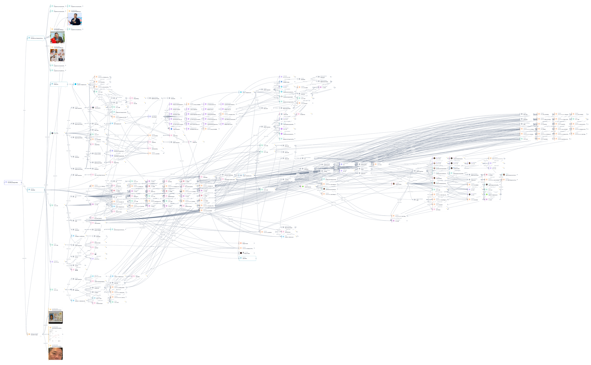
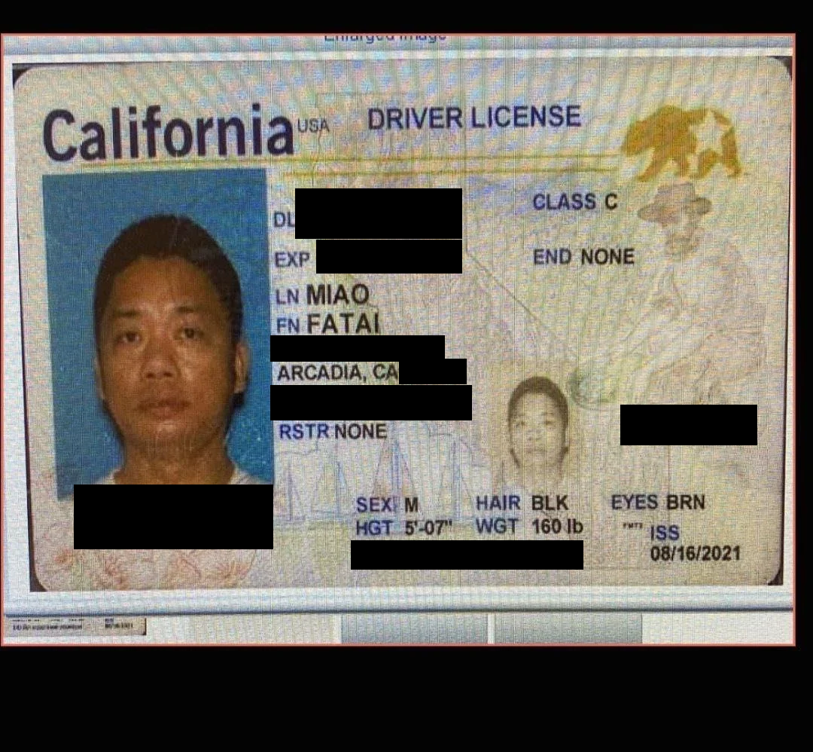
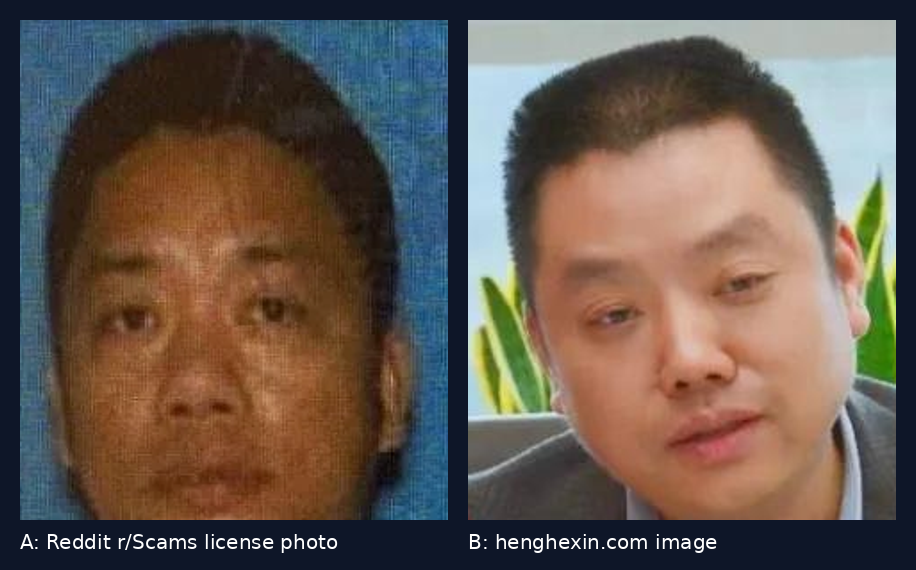
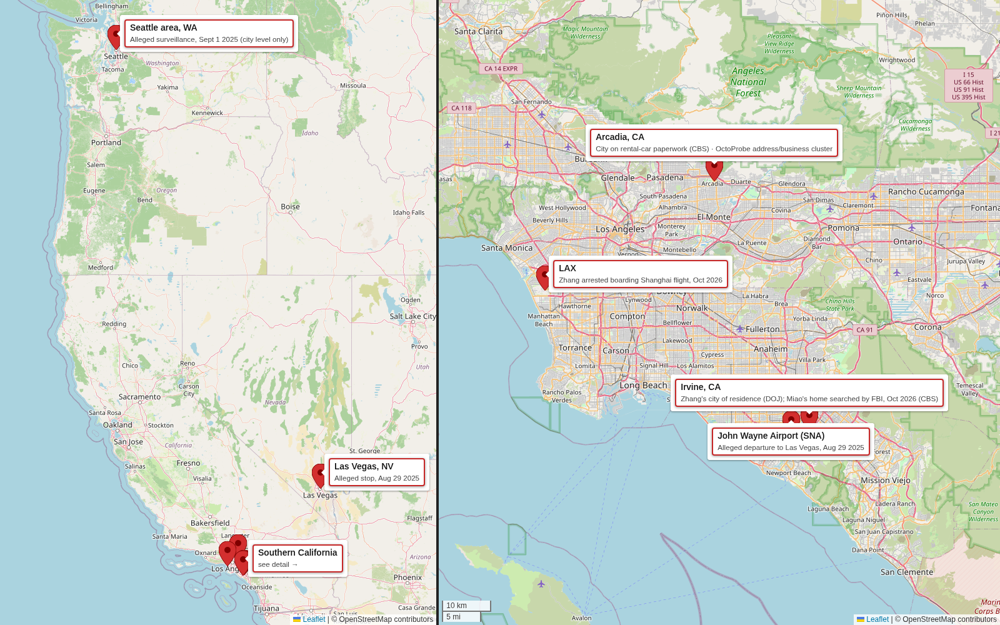

Summary: OctoProbe's investigation did not start with Zhang. It started with a January 2024 Reddit post accusing a man named Fatai Miao of selling a fake Bahamian passport. On October 8, 2026, CBS News identified Miao as “Individual 1,” the unnamed companion in the federal complaint against Wanying “Heather” Zhang. The Justice Department charges that Zhang, 34, of Irvine, acted as an unregistered agent of the PRC and surveilled relatives of a high-ranking Taiwanese official in the Pacific Northwest on September 1, 2025. CBS reports the family lives in a Seattle suburb. Zhang is charged and presumed innocent. Miao is not charged, and DOJ has not accused him of wrongdoing. The Reddit claims are anonymous and unverified; they concern Miao alone, and the retrievable text of the post never names or describes Zhang.
Key finding
- Storyline: The Reddit allegation named Miao. Seeding his public identifiers produced an Arcadia, CA address-and-business cluster. CBS separately reports that rental-car paperwork for the alleged Seattle trip listed an address in Arcadia. That overlap, at city level, is the link between the 2024 scam allegation and the 2026 case.
- Timeline: Reddit allegation (Jan 2024), then the alleged trip (Aug 29 to Sept 1, 2025), Miao's reported one-way flight to China (about two weeks before an Oct 7, 2026 hearing), Zhang's arrest at LAX (Sunday, Oct 4, 2026), and this investigation (opened Oct 8, 2026).
- Geography: Irvine and Arcadia are the two Southern California anchors. John Wayne Airport, Las Vegas, and the Seattle area make up the alleged 2025 route, and LAX is the arrest site.
- Confidence: High for the charging facts, which come from DOJ. Moderate for Miao as Individual 1, which rests on CBS reporting. Low for the Reddit claims, which are anonymous and uncorroborated. The alleged face match is unverified and is left to the reader.
The case: what DOJ charges
Per the DOJ press release, Zhang was “arrested Sunday on a one count complaint charging her with acting in the United States as an unregistered agent of the government of the People’s Republic of China (PRC)”. That Sunday was October 4, 2026. DOJ says “Zhang was arrested prior to her planned departure from Los Angeles International Airport, where she planned to board a flight to China.” The New York Post adds that she “was busted as she tried to board a flight to Shanghai.”
The surveillance trip, per the complaint as summarized by DOJ: “On Aug. 29, 2025, Zhang and another individual flew from John Wayne Airport in Orange County to Las Vegas.” Then “On Sept. 1, 2025, they flew from Las Vegas to the Pacific Northwest, where the victims reside.” Once there:
Upon their arrival, Zhang and the other individual traveled to the victims’ residence and conducted surveillance.
CBS News reports the target was Lai Ting-yu, son of Taiwan's president, and that the FBI cites “footage from a neighbor's security camera”. A federal judge ordered Zhang held as a flight risk at a detention hearing on Wednesday, October 7.
The $190,000. CBS reports that prosecutor Amanda Elbogen “told the court Wednesday that Zhang had received $190,000 into a Chinese bank account” from a cryptocurrency exchange business. The New York Post describes it as “access to $190,000 in a secret Chinese cryptocurrency account”. The Post also reports a November 2023 photo of her behind an All American Chinese Association (AACA) banner during Xi Jinping's San Francisco visit. As DOJ itself notes, “A criminal complaint is merely an allegation.”
“Individual 1”: what the press reports
The complaint does not name Individual 1. CBS News identifies him as Fatai Miao: “Fatai Miao, a Chinese-born California construction entrepreneur, is the man believed to have accompanied realtor Wanying Zhang to Seattle in September 2025”. The identification rests on the FBI affidavit. CBS quotes the agent's statement that the rental paperwork listed a house he sold, as “Based on public records, I know that Individual 1 sold a house at this address on or about September 11, 2025”. The Taipei Times, relaying CBS, says the affidavit “contained clues that helped identify Miao as” Individual 1.
The flight. CBS reports that Individual 1 “left on a one-way ticket to China about two weeks ago, prosecutors said during Wednesday's hearing.” FBI agents searched his empty Irvine home on Sunday, October 4. CBS is explicit: “The Justice Department has not accused him of any wrongdoing”, and a relative described him as a “follower.” The New York Post, citing sources, describes Miao as Zhang's lover. Miao is not charged with any crime.
Where the trail started: the Reddit passport-scam allegation
The investigation's starting lead was “Fake Bahamian passport scam,” r/Scams, posted January 14, 2024 by an anonymous user. What the poster alleges, in their own words:
- Who: The poster names “Mr FATAI MIAO” and says Miao claimed a relative (a nephew, named in the post) was a Bahamian official posted to Ghana who “could help me apply for a Bahamian passport and ID for a fee of US$300,000”. The post lists a phone number for that relative; we withhold it.
- Money and payment method: The poster wrote that they “made the first payment of 60,000 USDT” and that “a total of 305,000 USDT was transferred to him”. USDT is the Tether stablecoin.
- The passport and Malaysia: The poster wrote that the passport was mailed to Dubai and that on June 1, 2023, “I was investigated by the local customs and was detained with a fake traveling document”.
- Scale and claimed insiders: The poster wrote that “someone within the Bahamas Immigration Bureau has processed more than 70 such passports”, and described screenshots of “The chats where he pretended to be a Bahamian official to deceive me.”
- Companies: The retrieved text names no company.
A commenter offered the plainest reading: “You ran into a counterfeiter and essentially bought a fake passport.”
Assessment. The post is a single anonymous account. Its exhibits (the passport, chats and a claimed immigration certificate) are only what the poster says they uploaded. Nothing here verifies the payments, the Malaysian detention or any Bahamian insider, and the account fits a counterfeit-document sale at least as well as an insider scheme. The post's only point of contact with the DOJ case is the name Fatai Miao. It predates the alleged trip by 19 months and does not mention Zhang, Taiwan, surveillance or the PRC. The connection comes from CBS identifying Miao as Individual 1, together with the city-level Arcadia overlap described below. It does not come from anything in the post. Ludepress reaches the same conclusion: “两条线索目前能够确认的交集，仅在于公开资料均提到了名为Fatai Miao的人物。” In our translation, that says the only confirmable intersection is that public records on both threads mention a person named Fatai Miao. Ludepress also writes “目前尚无独立证据证实这些指控”, which translates as “there is currently no independent evidence confirming these allegations.”
Sourcing note: Reddit blocks automated access, and archived copies contain no post text. The Reddit quotes above are taken verbatim from a search-engine index copy of the post, retrieved October 15, 2026, and could not be checked against the live page.
The figure below shows the Chinese-language outlet Ludepress, which summarized the post on October 12, 2026 and itself notes that there is no independent evidence for the claims and no public evidence tying them to the Zhang case.

OSINT analysis
Identifier graph
The investigation was opened on October 8, 2026 with five seed identifiers. After 11 rounds and 123 queries, it holds 221 nodes and 545 edges, including 58 addresses, 20 phone numbers, 10 email addresses, 15 usernames, 22 profile URLs, and 19 corporate entities. The Reddit thread is a node in the graph, attached to a subject cluster built around an Arcadia, CA address, several phone numbers and email addresses (all withheld), and construction and real-estate business registrations. The investigation also holds three images that were manually uploaded from the Reddit post, plus three images taken from a Chinese-language company website, which are attached to a separate subject.

Alleged close match: Reddit license photo vs. HenHexin image
The Reddit thread includes a photo of a California driver license in the name of Fatai Miao, posted publicly by the anonymous poster. Separately, the investigation holds an image published on henghexin.com showing a man in a suit at a desk with Chinese Communist Party flags; that setting is as published by HenHexin. The two images are presented here as an alleged close match. OctoProbe does not say they show the same person, makes no claim about party membership, and leaves the conclusion to the reader. Miao is not charged with any crime.



Timeline
- Jun 1, 2023: The Reddit poster says they were detained in Malaysia with the passport (claim not verified).
- Nov 2023: A photo shows Zhang behind an AACA banner during Xi's San Francisco visit (NY Post, CBS).
- Jan 14, 2024: The r/Scams post naming Fatai Miao is published.
- Aug 29, 2025: Zhang allegedly flies from John Wayne Airport to Las Vegas (DOJ).
- Sep 1, 2025: Alleged surveillance in the Seattle area. CBS reports that Individual 1 was in the rented SUV.
- About two weeks before Oct 7, 2026: Miao takes a one-way flight to China, per prosecutors as reported by CBS.
- Sun, Oct 4, 2026: Zhang is arrested at LAX trying to board a flight to Shanghai, and the FBI searches Miao's empty Irvine home (CBS).
- Mon, Oct 5, 2026: DOJ announces the charge; Zhang makes her initial court appearance (DOJ, CBS).
- Wed, Oct 7, 2026: Detention hearing; the judge orders Zhang held as a flight risk (CBS).
- Thu, Oct 8, 2026: CBS identifies Miao as Individual 1, and the OctoProbe investigation opens.
- Oct 9 to 12, 2026: NY Post (Oct 9), Taipei Times (Oct 10), and Ludepress (Oct 12) coverage.
- Oct 19, 2026: Zhang's next court date (NY Post).
Geography
The pattern of life clusters in two Southern California cities about 34 miles apart in a straight line (about 40 miles, or roughly an hour, by road). Irvine is Zhang's city of residence (DOJ) and the site of Miao's searched home (CBS). Arcadia is the city CBS says appeared on the rental paperwork, and it is also where the graph's address-and-business cluster sits. The alleged 2025 route ran from John Wayne Airport, about 2.5 miles from central Irvine in a straight line (about a 10-minute drive), to Las Vegas and then to the Seattle area. The arrest happened at LAX. All locations are shown at city or venue level. No home locations are shown.

Confidence
- High: Zhang's charge, arrest, and alleged travel dates, from DOJ's own release.
- Moderate: Miao as Individual 1, which comes from CBS reporting and documents and is not stated by DOJ. The Arcadia overlap is also moderate: it holds at city level only.
- Low: The Reddit passport claims, which are anonymous and uncorroborated, and the reported romantic relationship, which rests on unnamed sources in the NY Post.
- Unassessed: The alleged close match between the Reddit license photo and the HenHexin image. OctoProbe draws no conclusion.
Method
- Sources: The investigation combined open-source collection with premium and proprietary data pulls across 30+ services. Sources cited here: the DOJ press release, CBS News, the New York Post, the Taipei Times, Ludepress, the public Reddit thread, and the OctoProbe identifier graph. Phone numbers, email addresses, and street numbers are withheld.
- Capture date: October 15, 2026.
Disclaimer
Zhang is charged in a federal criminal complaint; Miao is not charged. A criminal complaint or indictment is an accusation, not proof; every defendant is presumed innocent unless and until proven guilty in a court of law.